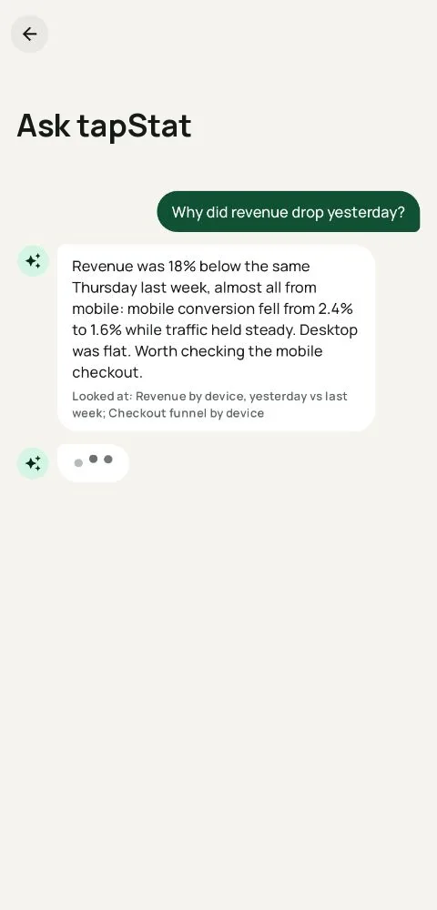
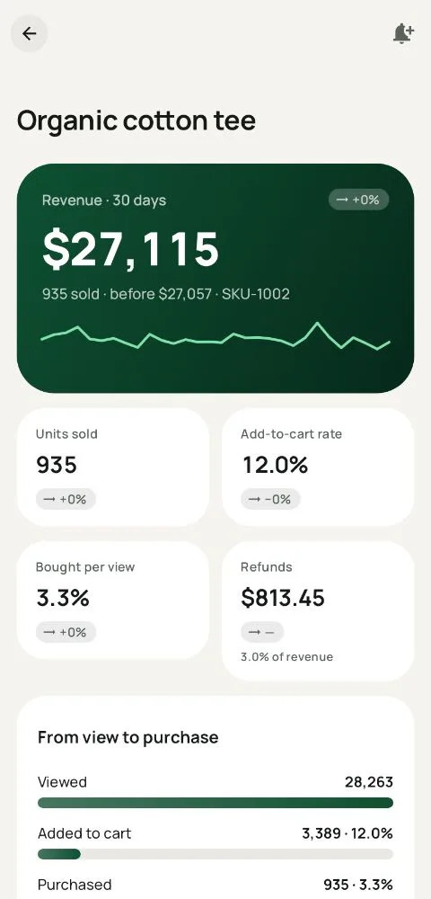
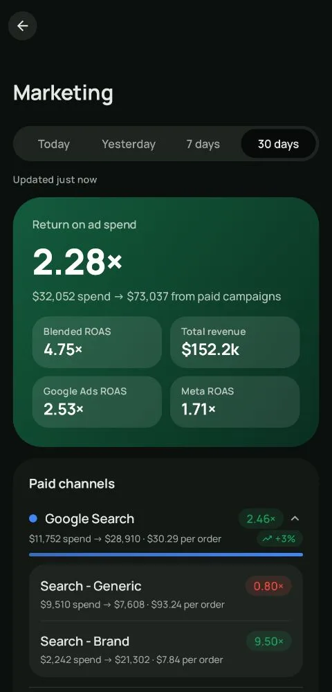
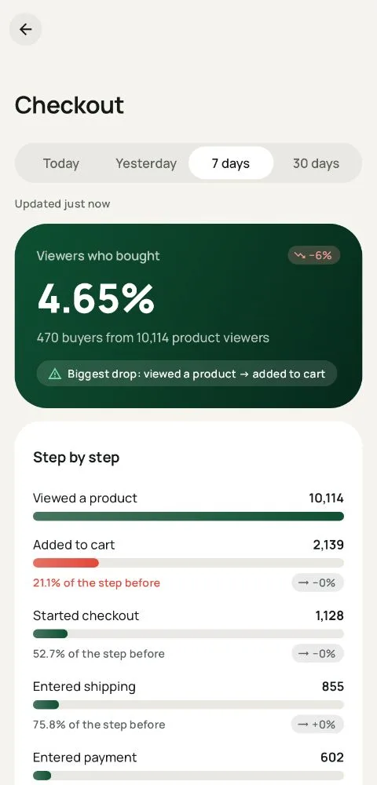
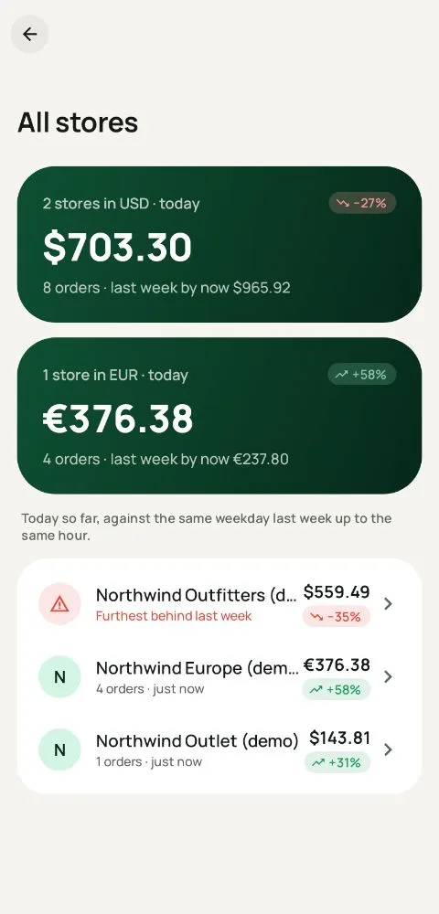

Every number your store runs on
tapStat reads your Google Analytics 4 data and turns it into the screens a store owner actually opens. Free covers the daily essentials; Pro adds the answers.

The morning check, done in three seconds
The dashboard opens on gross revenue and today's pace, then orders, average order value, conversion rate and refunds. Every number is compared with the same weekday, so you compare a Tuesday with a Tuesday.
- Today's pace: sales so far against last week up to the same hour, with a projection for the day
- Today, yesterday and 7 days on the free plan
- 30 days, any custom range, and any comparison: previous period, same weekday last year, last Black Friday Pro
- Targets and a month-end forecast Pro
- Pinned views for the cuts you check every day Pro

Answers, not just numbers
When revenue moves, tapStat splits the change into traffic, conversion rate and order value, then shows the channels, devices, countries and products behind it.
- Why it changed, one tap from any number Pro
- Drill down by channel, device, country, landing page and product Pro
- Ask tapStat: questions in plain words, answered from your own GA4 reports Pro
- Talk mode: ask out loud and hear the answer Pro
- Notes on the timeline, so you remember the sale, the email or the outage Pro

Know which products carry you
Top products on the dashboard, and a drill-down for every item: revenue trend, views, add-to-cart rate, purchases and refunds.
- Product page with the view-to-purchase funnel and refunds
- Winners and losers against the previous period Pro
- Leaks: products that get viewed a lot but rarely bought Pro
- Alerts when a product spikes or drops Pro

See what your ads really earn
tapStat reads ad spend from GA4: the Google Ads link and GA4's cost data import for Meta, TikTok, Pinterest, Snap and Reddit. It groups traffic into clear channels and puts spend next to revenue.
- Spend, revenue and ROAS per channel and campaign
- Paid Facebook and Instagram combined into one Meta Ads channel
- Promotions and coupons
- MER and wasted ad spend Pro
- Profit after product costs, payment fees, shipping and ads, with POAS and break-even ROAS Pro

Find the step where buyers drop out
The checkout funnel from product view to purchase, step by step, with the biggest drop called out. Split it by device to find the mobile bug before it costs you a weekend.
- Funnel from viewed product to purchase
- Device split and coupon usage
- Landing pages and site search Pro
- Customers: new against returning Pro

The app comes to you
Alerts compare each day with the median of the same weekday over the last four weeks, so a normal quiet Sunday never fires. Conversion alerts wait until GA4 has finished attributing late sessions, so you don't get false alarms.
- Store and product alerts, plus tracking health alerts when data stops coming in
- Trend-aware alerts and product spikes Pro
- Morning brief at 8:00: yesterday, the month so far and what broke Pro
- Daily or weekly email digests, also to your team or accountant

Widgets, your watch and all your stores
Put today's revenue on your home screen, your lock screen and your wrist. Run more than one store? See them all on one screen, with the one that needs attention on top.
- Home screen widget with today's revenue and pace
- Wear OS tile and live revenue on the lock screen
- Widgets with any number, or every store at once Pro
- All stores side by side, with totals per currency Pro
- Share any screen or export it as CSV
Built on trust
Read-only
tapStat asks for read-only Analytics access and can never change your GA4 setup.
On your phone
Reports go straight from Google to your phone. Server features are optional.
Hosted in the EU
The optional server runs on Google Cloud in Europe.
Try it on a demo
A demo store with every Pro feature unlocked works without signing in.